IA et expertise
comptable :
6 tâches à
automatiser
Cabinets de la Côte d'Azur
N° 0427
Relance
Note de frais
Envoyée 05/11
J+7 · 12/11
Double
Relance de pièces
Dossier client · exercice 2026
Relevé bancaire d'octobre
Reçu
Factures fournisseurs
Reçu
Note de frais, déplacement
Manquant
Contrat de prêt
Reçu
Vu par :
Relancé J+7
Automatique